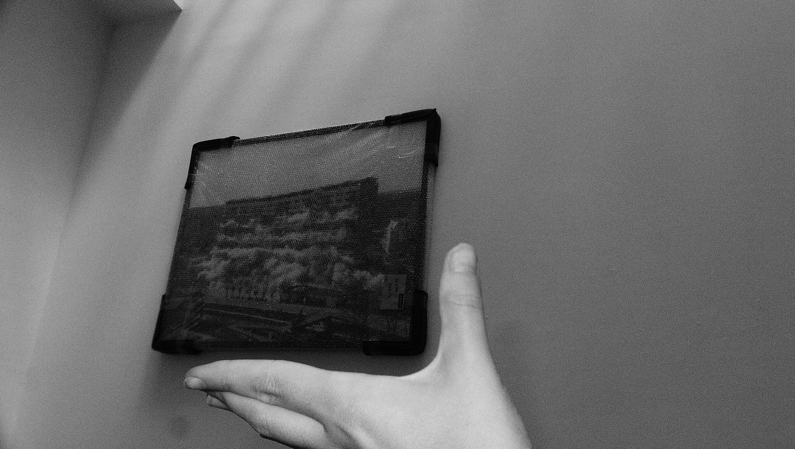
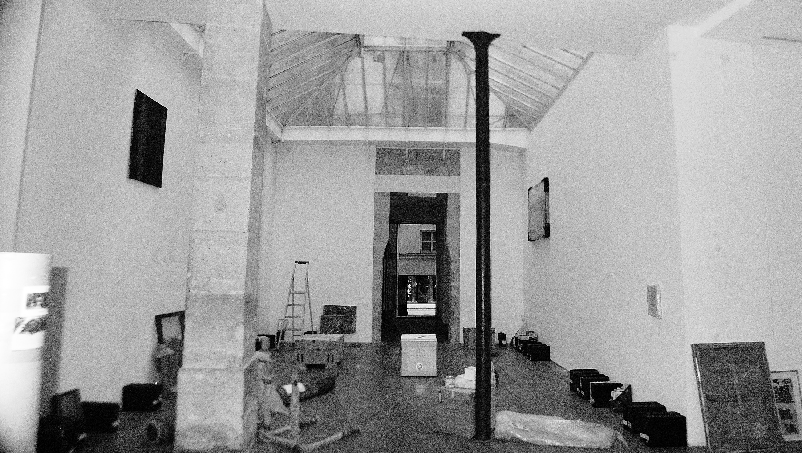
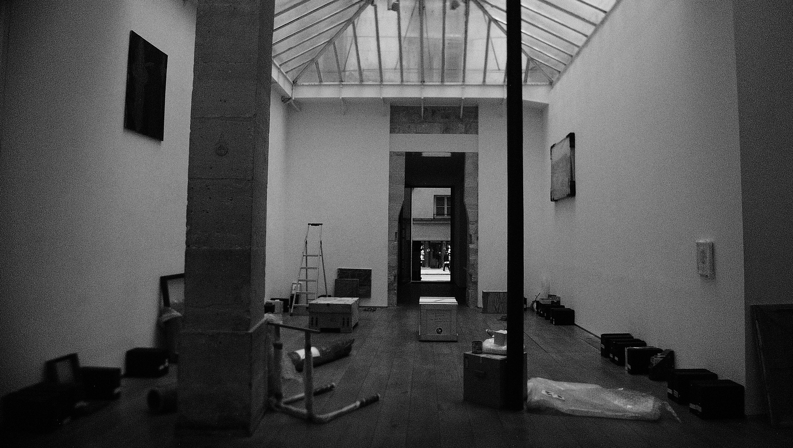

repositorium / galerie eric dupont / paris
exhibition repository
What to do with what has been lived now? And should I take care of maintenance at all...
The Eric Dupont Gallery has existed for more than thirty years in a continuous stream of exhibitions, fairs, and events. In this project, we approached the gallery as a repository where paintings, objects, books, ideologies, and micro-ecosystems continue their lives after exhibition.
We listen to the voice of the archive: microorganisms on canvas, paint cracks on walls, accidental glances, and packed timelines. The repository reaches a condensation point where waiting becomes material, and documentation becomes an active environment.
Instead of a progressive exhibition narrative, the space opens as a search environment: a condensed and observant field where visitors move through books, traces, residues, and dormant processes ready to happen again in another form.
* the dew point is the temperature at which vapor reaches saturation and begins to condense.
gallery
documentation

